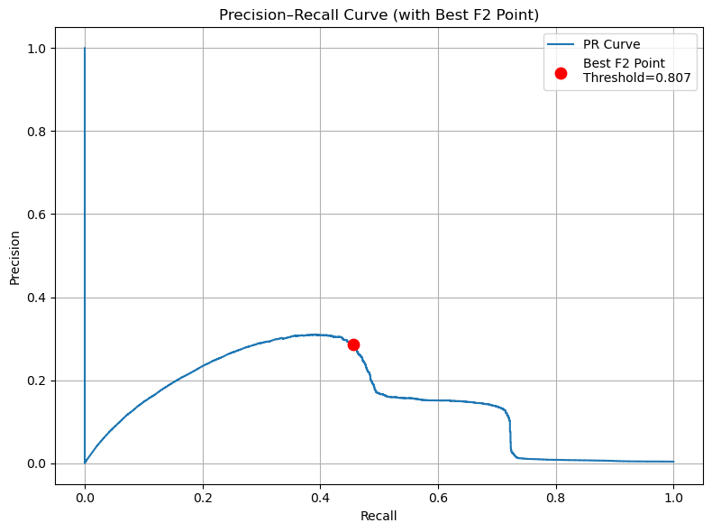
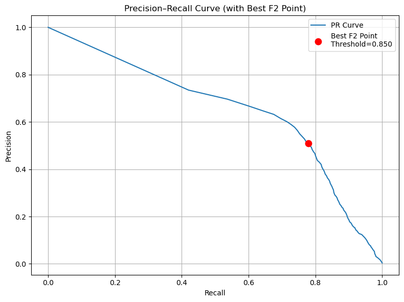

This extreme class imbalance poses a significant challenge for classification models. While the dataset is dominated by legitimate transactions, the minority class (fraudulent cases) is of primary importance, especially in practical fraud detection systems.
For a classification model, especially in domains such as fraud detection, medical diagnostics, and spam filtering, rare but high-impact cases are often the primary concern. However, if imbalanced data is not properly addressed during training, the model may appear to perform well—achieving high overall accuracy—while completely failing to detect the minority class. This results in misleading evaluation metrics and significantly reduces the model’s practical value.In such datasets, the minority class often behaves like an outlier due to its sparse distribution in the feature space. Many models interpret these rare patterns as noise or unrepresentative signals, leading them to underfit or ignore the minority class. Since most algorithms aim to minimize overall error, they are naturally biased toward the majority class.Consequently, imbalanced data can cause the model to overfit the dominant class while neglecting the minority class. Addressing this imbalance is therefore critical to building models that are not only statistically sound but also effective in real-world decision-making.
🔠Fraudulent activity is most concentrated in “grocery_pos†and “gas_transport†categories.
🔍The fraudulent transactions were evenly distributed across each city, and there was no particularly high concentration in any specific city.
🔠Two fraud “hot-spots†emerge.Most cases cluster at log10 ≈ 2.5-3.1 (≈ $320–1 250), suggesting fraudsters prefer high-profit amounts.A smaller spike at log10 ≈ 1.0-1.3 (≈ $8–20) indicates card-testing micro-charges.Few frauds occur between, so risk versus amount is clearly non-linear—models should bin or split on value.
🔠The fraudulent transactions were evenly distributed across each job, and there was no particularly high concentration in any specific job.
🔍Age‐interval comparison indicates fraud frequency increases with age, peaking in the 58–95 age group.
📦 Data Preprocessing
- Removed redundant variables and retained only
category, amt, gender, job, is_fraud, and age_at_transaction for testing.
-
Categorical Variables encoding
- Considering that
category has a relatively small number of subdivisions, I encoded it by mapping each sub-category to a specific integer.
- For
job, I initially considered using LabelEncoder, but its integer encoding implies an ordinal relationship among categories, which is not appropriate for this feature. Therefore, I applied frequency encoding instead.
-
Numerical Variables encoding
- Scaled
amt and age_at_transaction using StandardScaler， as Logistic Regression is a linear model trained using gradient descent, which is highly sensitive to feature scales. StandardScaler can reshape the cost function to be more symmetric, helping the model train faster and more reliably. Plus, standardscaling the varibales ensures that regularization treats all features equally, improving model generalization and interpretability.
📊 Logistic Regression Model Evaluation Report
📌 Overview
- Model: Logistic Regression
- Resampling: SMOTE (0.1) + RandomUnderSampler (0.15)
I use a low SMOTE ratio to avoid over-generating synthetic fraud samples. Fraud data is often heterogeneous, and high SMOTE ratios (e.g., 0.5) can create unrealistic combinations of dissimilar fraud cases. This synthetic noise may confuse the model and hurt test recall. A smaller ratio helps the model focus on core fraud patterns, reduces overfitting, and preserves the natural class imbalance—which reflects real-world fraud clustering.
- Evaluation Focus: F2 score (recall-focused)
In credit card fraud detection, the cost of missing a fraudulent transaction (false negative) is typically much higher than flagging a legitimate one (false positive). Therefore, I use the F2 score to prioritize recall over precision during model evaluation.
🔠Threshold Optimization
- Best threshold for F2: 0.8074
- Maximum F2 score: 0.4071
📈 Performance Metrics
📉 Precision-Recall Curve

📉 ROC Curve

📋 Classification Report (at F2-optimized threshold)
| Class |
Precision |
Recall |
F2-Score |
Support |
| Non-Fraud |
0.998 |
0.996 |
0.997 |
553,574 |
| Fraud |
0.285 |
0.456 |
0.351 |
2,145 |
🧮 Confusion Matrix
|
Predicted: 0 |
Predicted: 1 |
| Actual: 0 |
TN = 551,120 |
FP = 2,454 |
| Actual: 1 |
FN = 1,167 |
TP = 978 |
📊 Summary
The model demonstrates strong discriminatory ability (ROC AUC: 0.8405) and moderate fraud recall (45.6%) at the F2-optimized threshold, but its low precision (28.5%) and modest PR AUC (0.1465) highlight the challenges of rare-event detection and indicate that further filtering or post-processing would be necessary for reliable production use.
📊 Random Forest Model Evaluation Report
📌 Overview
- Model: Random Forest
- Resampling: SMOTE (0.01) + RandomUnderSampler (0.2)
I use a low SMOTE ratio to avoid over-generating synthetic fraud samples. Fraud data is often heterogeneous, and high SMOTE ratios can introduce unrealistic patterns that reduce model generalization. A small ratio preserves natural class imbalance and helps focus on core fraud patterns.
- Evaluation Focus: F2 score (recall-focused)
In credit card fraud detection, false negatives are more costly than false positives. Therefore, F2 is used to prioritize recall over precision.
🔠Threshold Optimization
- Best threshold for F2: 0.8500
- Maximum F2 score: 0.7042
📈 Performance Metrics
📉 Precision-Recall Curve

📉 ROC Curve

- OOB Score (on resampled train): 0.9810
📋 Classification Report (at F2-optimized threshold)
| Class |
Precision |
Recall |
F1-Score |
Support |
| Non-Fraud (0) |
0.999 |
0.997 |
0.998 |
553,574 |
| Fraud (1) |
0.501 |
0.782 |
0.611 |
2,145 |
🧮 Confusion Matrix
|
Predicted: 0 |
Predicted: 1 |
| Actual: 0 |
TN = 551,904 |
FP = 1,670 |
| Actual: 1 |
FN = 468 |
TP = 1,677 |
🧠Feature Importance Analysis
🌲 Gini Importance
 What it measures: How frequently a feature is used in the decision trees and how much it reduces node impurity (Gini index). Higher values indicate more frequent and effective splits.
What it measures: How frequently a feature is used in the decision trees and how much it reduces node impurity (Gini index). Higher values indicate more frequent and effective splits.
The Gini-based ranking shows amt as the dominant feature (~0.7), followed by category_Code (~0.18). Other features such as age_scaled and job_freq contribute minimally to the tree structure.
🧪 Permutation Importance
What it measures: How much a feature contributes to the model's predictive performance (e.g., F2 score), by observing performance drops when the feature is randomly shuffled.
The permutation results confirm that both amt and category_Code are crucial to the model. Their removal causes a significant decline in F2, indicating strong real-world importance.
🔠SHAP Waterfall Plots (Top 3 Fraud Cases)
What it measures: The individual contribution of each feature to a specific prediction. SHAP uses game theory to calculate how each feature pushes the prediction higher or lower.
These plots highlight how
amt and
category_Code consistently act as strong positive contributors to fraud predictions in all three cases.
Conclusion: amt and
category_Code are consistently the most influential features across Gini, permutation, and SHAP explanations. While Gini reflects tree structure, permutation ties directly to predictive performance, and SHAP gives the most detailed per-instance explanation.
📊 Summary
The Random Forest model achieves excellent ROC AUC (0.9902) and strong PR AUC (0.5914), showing effective separation of fraud and non-fraud transactions even under class imbalance. At the F2-optimized threshold of 0.85, the model captures 78.2% of fraud cases with 50.1% precision, reflecting a solid recall-focused trade-off. The out-of-bag (OOB) score on the resampled training set is 0.9810, indicating good model generalization. However, the relatively low precision highlights the need for further filtering or downstream verification in production use.
📦 Cost-Based Evaluation of Fraud Detection Model
To evaluate the cost performance of the model, I first defined a cost ratio between false negatives (FN) and false positives (FP) as 50:1.
In this case, each FN was assigned a cost of $500, and each FP a cost of $10.
These values reflect the real-world impact of fraud detection, where failing to detect a fraud (FN) is far more costly than mistakenly flagging a normal transaction (FP).
This cost structure is consistent with findings from prior research.
For example, Dal Pozzolo et al. (2015) noted that while false positives are frequent in credit card fraud detection, their financial impact is minor compared to that of false negatives, which often lead to direct monetary loss.
Similarly, Elkan (2001) emphasized that in real-world classification problems, misclassification costs are rarely equal and often differ by an order of magnitude or more, making cost-sensitive learning essential.
Carcillo et al. (2018) also applied a cost matrix where false negatives were penalized 100 times more than false positives, showing improved business-aligned performance when optimizing for total cost rather than accuracy alone.
📚 References (APA Format)
-
Dal Pozzolo, A., Caelen, O., Le Borgne, Y. A., Waterschoot, S., & Bontempi, G. (2015).
Credit card fraud detection: A realistic modeling and a novel learning strategy.
Pattern Recognition, 48(10), 3151–3160.
-
Elkan, C. (2001).
The foundations of cost-sensitive learning.
Proceedings of the 17th International Joint Conference on Artificial Intelligence (IJCAI), 973–978.
-
Carcillo, F., Dal Pozzolo, A., Le Borgne, Y. A., Caelen, O., Mazzer, Y., & Bontempi, G. (2018).
Combining unsupervised and supervised learning in credit card fraud detection.
Information Sciences, 557, 317–331.
Note:
💰 Cost-Based Threshold Optimization (Logistic Regression)
Using a predefined cost matrix that assigns greater penalties to missed frauds (false negatives) than to false alerts (false positives),
I calculated the total cost of classification errors across different decision thresholds on the test set.
The graph above shows how total cost varies with the probability threshold in the logistic regression model.
At low thresholds (between 0.0 and 0.2), the model predicts too many transactions as fraud,
resulting in a surge of false positives and keeping the total cost above $5 million.
As the threshold increases, the cost declines sharply, reaching its minimum at a threshold of 0.27.
This threshold provides the best trade-off between false positives and false negatives,
minimizing the overall financial impact of prediction errors.
Beyond 0.27, the total cost begins to rise again, but more gradually, staying under $2 million.
The lowest total cost achieved is approximately $411,400, suggesting that setting the threshold near 0.27
delivers the most cost-effective fraud detection performance.
Note:
💰 Cost-Based Threshold Optimization (Random Forest)
Using a cost-sensitive evaluation approach, I calculated the total financial cost of misclassification across various decision thresholds in the random forest model.
The cost function heavily penalizes false negatives (missed fraud) over false positives (false alarms), reflecting real-world priorities in fraud detection.
As shown in the graph above, total cost is extremely high at thresholds near 0.0 due to an overwhelming number of false positives.
As the threshold increases, the cost drops significantly and stabilizes between 0.2 and 0.7.
The lowest total cost is observed at a threshold of 0.46, where the model achieves the optimal trade-off between fraud detection and false alerts.
At this threshold, the minimum cost is approximately $186,480, representing the most cost-effective configuration for the random forest model on the test set.
Beyond this point, the cost begins to rise again gradually, indicating a decline in fraud detection effectiveness.
✅ Evaluating the Hidden Cost of Manual Review in Fraud Detection
While evaluating model performance through false negatives (FN) and false positives (FP) is essential, real-world deployment also demands attention to the hidden operational costs of manual reviews.
In fraud detection systems, transactions flagged by the model as suspicious are often routed for human review before a final decision is made.
This process, although necessary, introduces labor costs that can quickly accumulate at scale.
Mastercard (2024) highlights that inefficient manual review processes not only increase operational expenses but also erode customer experience due to delays and friction in legitimate transactions.
Automating these workflows is emphasized as a way to improve internal efficiency and reduce fraud losses without adding unnecessary overhead.
Ravelin (2024) further supports this by stating that manual review is one of the most overlooked yet significant cost components in fraud operations.
According to the MRC Global Fraud Survey, each manual review takes on average 5.6 minutes, and this time cost—when multiplied across thousands of cases—makes manual review
the fraud challenge of greatest concern to e-commerce merchants
.
Together, these insights reinforce that beyond misclassification costs (e.g., $500 for a false negative, $10 for a false positive),
manual review cost is a major factor in total cost evaluation.
Ignoring it can lead to underestimating the true cost of a deployed fraud detection model.
📚 References
.png)
.png)
.png)

.png)